СП 344.1325800.2017 «Системы водоснабжения и отопления зданий внутренние с испол»
О документе: разработчики, утверждение, регистрация, ключевые слова
СВОД ПРАВИЛ СП 344.1325800.2017
Издание официальное
1 ИСПОЛНИТЕЛИ - ООО «СанТехПроект», ОАО «НИИМосстрой»
2 ВНЕСЕН Техническим комитетом по стандартизации ТК 465 «Строительство»
3 ПОДГОТОВЛЕН к утверждению Департаментом градостроительной деятельности и архитектуры Министерства строительства и жилищно-коммунального хозяйства Российской Федерации (Минстрой России)
4 УТВЕРЖДЕН Приказом Министерства строительства и жилищно-коммунального хозяйства Российской Федерации от 18 сентября 2017 г. № 1229/пр и введен в действие с 19 марта 2018 г.
5 ЗАРЕГИСТРИРОВАН Федеральным агентством по техническому регулированию и метрологии (Росстандарт)
В случае пересмотра (замены) или отмены настоящего свода правил соответствующее уведомление будет опубликовано в установленном порядке. Соответствующая информация, уведомление и тексты размещаются также в информационной системе общего пользования - на официальном сайте разработчика (Минстрой России) в сети Интернет
Настоящий нормативный документ не может быть полностью или частично воспроизведен, тиражирован и распространен в качестве официального издания на территории Российской Федерации без разрешения Минстроя России
Дата введения - 2018-03-19
УДК ОКС 91.140.10
23.040.20
Ключевые слова: трубы из «сшитого» полиэтилена, соединительные детали, водоснабжение, отопление, общие технические требования, размеры, методы испытаний, монтаж
Введение
6 ВВЕДЕН ВПЕРВЫЕ
Настоящий свод правил разработан в соответствии требованиями федеральных законов от 30 декабря 2009 г. № 384-ФЗ «Технический регламент о безопасности зданий и сооружений» [1], от 23 ноября 2009 г. № 261-ФЗ «Об энергосбережении и о повышении энергетической эффективности и о внесении изменений в отдельные законодательные акты Российской Федерации» [2], от 27 декабря 2002 г. № 184-ФЗ «О техническом регулировании» [3], от 22 июля 2008 г. № 123-ФЗ «Технический регламент о требованиях пожарной безопасности» [4].
В настоящем своде правил рассмотрены специфика (согласование) трассировки внутренних водопроводных сетей и трубопроводов водяного отопления из гибких труб из «сшитых» полиэтиленов ПЭ-С с учетом оптимальной расстановки креплений на стояках и подводках. Отмечены особенности монтажа трубопроводов водяного отопления из гибких труб из «сшитых» полиэтиленов ПЭ-С и выбор оптимальных мест креплений на горизонтальных и вертикальных участках трубопроводов.
Свод правил выполнен авторским коллективом: ООО «СанТехПроект» (канд. техн. наук А.Я. Шарипов ), ОАО «НИИМосстрой» (канд. техн. наук А.А. Отставнов , инж. Н.В. Митрофанова ).
1Область применения
2Нормативные ссылки
В настоящем своде правил использованы нормативные ссылки на следующие документы:
ГОСТ 12.1.004-91 Система стандартов безопасности труда. Пожарная безопасность. Общие требования
ГОСТ ИСО 4065-2005 Трубы из термопластов. Таблица универсальных толщин стенок
ГОСТ 8032-84 Предпочтительные числа и ряды предпочтительных чисел
ГОСТ ИСО 12162-2006 Материалы термопластичные для напорных труб и соединительных деталей. Классификация и обозначение. Коэффициент запаса прочности
ГОСТ 15150-69 Машины, приборы и другие технические изделия. Исполнения для различных климатических районов. Категории, условия эксплуатации, хранения и транспортирования в части воздействия климатических факторов внешней среды
\_\_\_\_\_\_\_\_\_\_\_\_\_\_\_\_\_\_\_\_\_\_\_\_\_\_\_\_\_\_\_\_\_\_\_\_\_\_\_\_\_\_\_\_\_\_\_\_\_\_\_\_\_\_\_\_\_\_\_\_\_\_\_\_\_\_\_\_\_\_\_\_\_\_\_\_\_
Правила проектирования и монтажа
The water supply and heating interior buildings systems cross-linked polyethylene pipes. The rules of design and installation
СП .1325800.2017
ГОСТ 24054-80 Изделия машиностроения и приборостроения. Методы испытаний на герметичность. Общие требования
ГОСТ 25136-82 Соединение трубопроводов. Методы испытания на герметичность
ГОСТ 25151-82 Водоснабжение. Термины и определения
ГОСТ 32415-2013 Трубы напорные из термопластов и соединительные детали к ним для систем водоснабжения и отопления. Общие технические условия
ГОСТ Р 51232-98 Вода питьевая. Общие требования к организации и методам контроля качества
ГОСТ Р 53630-2015 Трубы напорные многослойные для систем водоснабжения и отопления. Общие технические условия
ГОСТ Р 54468-2011 Трубы гибкие с тепловой изоляцией для систем теплоснабжения, горячего и холодного водоснабжения. Общие технические условия
ГОСТ Р 56730-2015 Трубы полимерные гибкие с тепловой изоляцией для систем теплоснабжения. Общие технические условия
СП 30.13330.2016 «СНиП 2.04.01-85* Внутренний водопровод и канализация зданий» СП 48.13330.2011 «СНиП 12-01-2004 Организация строительства» (с изменением №
1)
СП 51.13330.2011 «СНиП 23-03-2003 Защита от шума»
СП 60.13330.2016 «СНиП 41-01-2003 Отопление, вентиляция и кондиционирование воздуха»
СП 61.13330.2012 «СНиП 41-03-2003 Тепловая изоляция оборудования и трубопроводов» (с изменением № 1)
СП 68.13330.2017 «СНиП 3.01.04-87 Приемка в эксплуатацию законченных строительством объектов. Основные положения»
СП 73.13330.2016 «СНиП 3.05.01-85 Внутренние санитарно-технические системы зданий»
СанПиН 2.1.4.1074-01 Питьевая вода. Гигиенические требования к качеству воды централизованных систем питьевого водоснабжения. Контроль качества. Гигиенические требования к обеспечению безопасности систем горячего водоснабжения
СанПиН 2.2.1/2.1.1.1200-03 Санитарно-защитные зоны и санитарная классификация предприятий, сооружений и иных объектов
Примечание - При пользовании настоящим сводом правил целесообразно проверить действие ссылочных документов в информационной системе общего пользования -на официальном сайте федерального органа исполнительной власти в сфере стандартизации в сети Интернет или по ежегодному информационному указателю «Национальные стандарты», который опубликован по состоянию на 1 января текущего года, и по выпускам ежемесячного информационного указателя «Национальные стандарты» за текущий год. Если заменен ссылочный документ, на который дана недатированная ссылка, то рекомендуется использовать действующую версию этого документа с учетом всех внесенных в данную версию изменений. Если заменен ссылочный документ, на который дана датированная ссылка, то рекомендуется использовать версию этого документа с указанным выше годом утверждения (принятия). Если после утверждения настоящего свода правил в ссылочный документ, на который дана датированная ссылка, внесено изменение, затрагивающее положение, на которое дана ссылка, то это положение рекомендуется применять без учета данного изменения. Если ссылочный документ отменен без замены, то положение, в котором дана ссылка на него, рекомендуется применять в части, не затрагивающей эту ссылку. Сведения о действии сводов правил целесообразно проверить в Федеральном информационном фонде стандартов.
3Термины и определения
В настоящем своде правил применены термины в соответствии с ГОСТ 19185, ГОСТ 25151, ГОСТ 32415, СП 30.13330, СП 60.13330, СП 73.13330, а также следующие термины с соответствующими определениями:
- 3.1« сшитый» полиэтилен; ПЭ-С
- Термопластичный материал (термопласт), который при нагревании выше температуры плавления сохраняет способность перехода в вязкотекучее состояние.
- 3.2распределительный коллектор
- Фитинг, к которому присоединяются два или большее количество водоразборных точек.
- 3.3гибкая труба
- Труба, в которой прочность и поперечное сечение при изгибе не изменяются.
4Общие положения
- хозяйственно-питьевого водоснабжения с температурой воды до 20 °С и рабочим давлением: серии S6,3 (SDR 13,6) - до 1,0 МПа; серии S5 (SDR 11) - до 1,25 МПа; серии S4 (SDR 9) - до 1,6 МПа, при сроке службы не менее 50 лет;
- хозяйственно-питьевого водоснабжения с температурой воды до 75 °С и рабочим давлением: серии S5 (SDR 11) - до 0,6 МПа; серий S3,2 (SDR 7,4) и S2,5 (SDR 6) - до 1,0 МПа, при сроке службы не менее 30 лет;
- водяного отопления с температурой воды до 95 °С и рабочим давлением серий S3,2 (SDR 7,4) и S2,5 (SDR 6) - до 1,0 МПа, при сроке службы не менее 30 лет;
- напольного отопления (с температурой теплоносителя не выше 55 °С) в комбинации с нагревательными приборами (радиаторами, конвекторами) или с системой кондиционирования воздуха, при сроке службы не менее 30 лет.
Примечания
- 1 Допускается использовать трубы из ПЭ-С при устройстве холодных и горячих водопроводов и трубопроводов водяного отопления с любыми другими параметрами, при условии их обоснования согласно требованиям ГОСТ 32415.
- 2 В горячих системах с целью поддержания указанных значений параметров следует предусматривать приборы автоматического регулирования (температуры и давления) воды (теплоносителя).
3 Для устройства трубопроводов водяного отопления следует использовать трубы из ПЭ-С с барьерным слоем, предотвращающим проникновение в отопительную систему кислорода.
Примечания
1 Открытая прокладка внутренних водопроводов из труб из ПЭ-С допускается в производственных и складских помещениях, а также в технических этажах, чердаках и подвалах только в местах, где исключаются их механическое повреждение и воздействие на них ультрафиолетового излучения.
2 Применять трубопроводы из труб из ПЭ-С в раздельных сетях противопожарных водопроводах не допускается.
61.13330. Подводки/разводки к санитарно-техническим и отопительным приборам допускается не изолировать.
5Требования к свойствам труб из «сшитых» полиэтиленов и прочностным показателям элементов трубопроводов
- пероксидным ПЭ-Сa (PE-Xa);
- силанольным ПЭ-Сb (PE-Xb);
- радиационным ПЭ-Сc (PE-Xс).
Материал для труб из РЕ-Х, должен отвечать требованиям, приведенным в таблице 5.1.
СП .1325800.2017
| Наименование показателя | Значение | Единица измерения |
|---|---|---|
| Объемная масса при 23 °C | 955 | кг/м³ |
| Относительное удлинение при текучести (23 °C, 50 мм/мин) | 10 | % |
| Напряжение при текучести (23 °C, 50 мм/мин) | 26 | МПа |
| Модуль при растяжении (23 °C, 1 мм/мин) | 1100 | МПа |
| Твердость по Шору (Шор D, 3 с) | 62 | ед. Шора |
| Удельная теплоемкость при 23 °C | 1,92 | КДж/кг ∙ K |
| Тепловая проводимость | 0,38 | Вт/(м ∙ K) |
| Коэффициент линейного расширения | 1,9∙10 -4 | K -1 |
Трубы с барьерным слоем EVOH, должны отвечать требованиям, приведенным в таблице 5.2.
Таблица 5.2
| Наименование показателя | Значение | Единица изменения |
|---|---|---|
| Объемная масса | 1190 | кг/м³ |
| Прочность при растяжении при текучести (50 мм/мин, 23 °C) | 87 | МПа |
| Модуль упругости при растяжении (50 мм/мин, 23 °C) | 1690 | МПа |
| Относительное удлинение при разрыве (50 мм/мин, 23 °C) | 430 | % |
Примечание - Трубы с барьерным слоем из алюминия относят к металлополимерным и на них распространяются требования ГОСТ Р 53630.
6Классификация труб из «сшитых» полиэтиленов
- однослойными (из ПЭ-С);
- трехслойными (внутренний слой - из ПЭ-С, внешний - из EVOH и промежуточный - клеевой);
- пятислойными (внутренний и внешний слои - из ПЭ-С, средний - из EVOH и промежуточные - клеевые);
- армированными (нитями из арамида, кевлара и т. п.).
В таблице 6.1 приведены геометрические размеры труб.
Таблица 6.1 Размеры труб из ПЭ-С
(см. ГОСТ 32415) В миллиметрах
| Овальность, | e n * для S (SDR) | e n * для S (SDR) | e n * для S (SDR) | e n * для S (SDR) | e n * для S (SDR) | ||
|---|---|---|---|---|---|---|---|
| d n | Предельное | ≤ | 3,2 (7,4) | 4 (9) | 5 (11) | 6,3 (13,6) | 8 (17) |
| отклонение, (+) | |||||||
|---|---|---|---|---|---|---|---|
| 10 | 0,3 | 1,1 | 1,4 | 1,3 | 1,3 | 1,3 | 1,3 |
| 12 | 0,3 | 1,1 | 1,7 | 1,4 | 1,3 | 1,3 | 1,3 |
| 16 | 0,3 | 1,2 | 2,2 | 1,8 | 1,5 | 1,3 | 1,3 |
| 20 | 0,3 | 1,2 | 2,8 | 2,3 | 1,9 | 1,5 | 1,3 |
| 25 | 0,3 | 1,2 | 3,5 | 2,8 | 2,3 | 1,9 | 1,5 |
| 32 | 0,3 | 1/3 | 4,4 | 3,6 | 2,9 | 2,4 | 1,9 |
| 40 | 0,3 | 1,4 | 5,5 | 4,5 | 3,7 | 3 | 2,4 |
| 50 | 0,3 | 1,4 | 6,9 | 5,6 | 4,6 | 3,7 | 3 |
| 63 | 0,4 | 1,6 | 8,6 | 7,1 | 5,8 | 4,7 | 3,8 |
| 75 | 0,5 | 1,6 | 10,3 | 8,4 | 6,8 | 5,6 | 4,5 |
| 90 | 0,6 | 1,8 | 12,3 | 10,1 | 8,2 | 6,7 | 5,4 |
| 110 | 0,7 | 2,2 | 15,1 | 12,3 | 10 | 8,1 | 6,6 |
* Предельное отклонение δ определяют по формуле с округлением результатов до 0,1 мм: δ = (0,1 en + 0,1), мм.
Примечание - На трубы из сшитого полиэтилена с армировкой нитями распространяются требования ГОСТ Р 54468.
где L - длина труб, м.
Таблица 6.2 Режимы испытаний труб из ПЭ-С на стойкость к внутреннему давлению (см. ГОСТ 32415)
| Температура испытаний, °C | Время испытаний, ч, не менее | Гидростатическое (кольцевое) напряжение, МПа |
|---|---|---|
| 20 | 1 | 12 |
| 95 | 1 | 4,8 |
| 95 | 22 | 4,7 |
| 95 | 165 | 4,6 |
| 95 | 1000 | 4,4 |
СП .1325800.2017
7Классификация соединительных элементов для труб из «сшитых» полиэтиленов
- компрессионные - соединение осуществляется обжатием кольца по наружной поверхности трубы;
- прессовые (обжимные) - соединение осуществляется обжатием фитинга или отдельного кольца по наружной поверхности трубы с помощью специального инструмента;
- резьбовые разъемные - состоят из двух элементов, соединяемых накидной гайкой с эластичным уплотнением;
- фитинги быстрого соединения «пуш-фит», соединяемые усилием нажатия без применения нагрева или инструмента;
- фланцевые.
8Виды соединений труб из «сшитых» полиэтиленов между собой, с соединительными частями (фитингами) и арматурой
- компрессионные, собираемые обжатием кольца по наружной поверхности трубы (рисунок 8.1);
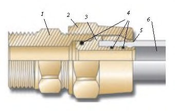
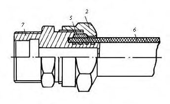
1 - деталь с наружными резьбами (корпус); 2 - накидная гайка; 3 - штуцерная деталь; 4 - резиновые кольца; 5 - разрезное кольцо; 6 - труба; 7 - штуцерная деталь с наружными резьбами (корпус)
Рисунок 8.1 -Компрессионные соединения труб из ПЭ-С с латунными деталями для резьбовой сборки со стальными трубами или муфтовой запорной/водоразборной арматурой
- прессовые (обжимные, опрессовываемые), собираемые обжатием фитинга или отдельного кольца по наружной поверхности трубы с помощью специального инструмента (рисунок 8.2);
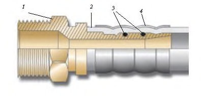
1 - штуцерная деталь с наружной резьбой (корпус); 2 - труба; 3 - резиновые кольца; 4 - стальная обойма/гильза
Рисунок 8.2 - Прессовое соединение трубы из ПЭ-С с латунными деталями для резьбовой сборки со стальными трубами или муфтовой запорной/водоразборной арматурой
- надвижные, собираемые надвижкой кольца на насаженный на штуцер конец трубы (рисунок 8.3);
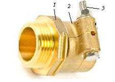
а) Из полисульфона б) Из латуни
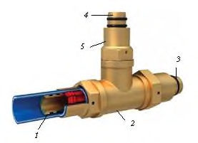
Рисунок 8.3 - Надвижные соединения труб из ПЭ-С со штуцерными фитингами
- стяжные, собираемые стягиванием болтом разрезной муфты вокруг конца трубы, насаженного на штуцер фитинга (рисунок 8.4);
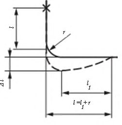
1 - штуцерно-резьбовая деталь (корпус); 2 - стяжная муфта; 3 - стяжной болт
Рисунок 8.4 - Стяжное соединение трубы из ПЭ-С с латунными деталями для резьбовой сборки со стальными трубами или муфтовой запорной/водоразборной арматурой
- «пуш-фит», усилием нажатия без применения нагрева или инструмента (рисунок 8.5);
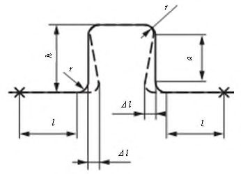
1 - труба; 2 - тройник; 3 - резиновое кольцо; 4 - штуцер; 5 - гильза с внутренней резьбой
Рисунок 8.5 - «Пуш-фит» соединение пятислойной трубы из ПЭ-С с латунным неравнопроходным тройником
- резьбовые разъемные, состоящие из двух элементов, собираемых накидной гайкой с эластичным уплотнением;
- фланцевые, собираемые на болтах и шпильках.
9Крепеж
- значительный, по сравнению с металлами, коэффициент линейного расширения (на прямолинейных участках трубопроводов следует применять компенсаторы со специальной конструкцией фиксирующих хомутов, а опорные конструкции должны обеспечивать свободное перемещение трубопровода);
- существенную чувствительность к надрезам и механическим повреждениям (хомуты креплений должны быть плоскими и иметь прокладку или закругленные края и гладкую внутреннюю поверхность, соприкасающиеся с трубами конструкции, например, сплошная постель должна иметь гладкую поверхность без заусенцев и острых кромок);
- низкие твердость, прочность и теплостойкость (не допускается использовать трубопроводы в качестве несущих конструкций).
10Компенсаторы осевых температурных деформаций
Рисунок 10.1 -Схемы возможных деформаций трубопроводов из труб из ПЭ-С
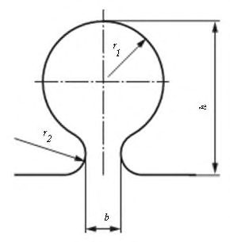
где α - коэффициент линейного температурного расширения, К -1 ;
Δ T - максимальная разность между температурами стенок трубопроводов в процессе эксплуатации и окружающей среды, при которой осуществляется монтаж замыкающих стыков трубопроводов, °С;
Е - модуль упругости ПЭ-С, Па;
F - площадь поперечного сечения трубы, м² .
где ℓ - первоначальная длина трубопровода, м.
где R - расчетное сопротивление материала труб, Па;
- ℓ 1 - длина прилегающего к отводу прямого участка трубопровода, воспринимающего перемещение Δ l , м; r - радиус изгиба отвода, м.
Рисунок 10.2 -Расчетная схема компенсатора температурных деформаций трубопроводов из труб из ПЭ-С в виде гнутого отвода под углом 90 о
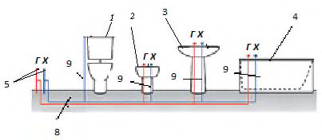
Максимально допустимое расстояние от конца отвода до места неподвижного закрепления ℓ , м, следует определять по формуле (3).
- полный вылет компенсатора, м; - радиус изгиба компенсатора, м; - длина прямого участка компенсатора, м.
Рисунок 10.3 -Расчетная схема П-образного гнутого компенсатора температурных деформаций трубопроводов из труб из ПЭ-С
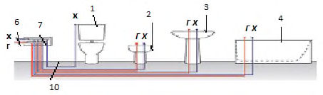
Максимально допустимые расстояния от компенсатора до места неподвижного закрепления трубопровода ℓ , м, следует определять по формуле (3) и затем уменьшать в 2 раза.
Рисунок 10.4 -Расчетная схема лиро-образного гнутого компенсатора температурных деформаций трубопроводов из труб из ПЭ-С
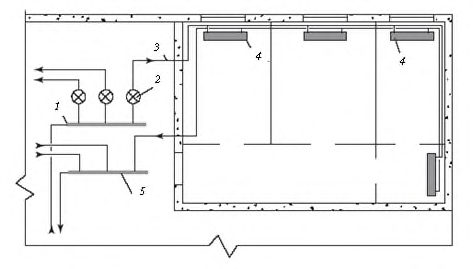
11Принцип выбора труб из «сшитых» полиэтиленов по пропускной способности
- возможность использования для расчета как водопроводов (холодных и горячих), так и трубопроводов водяного отопления;
- возможность использования для расчета полимерных, композитных и металлических трубопроводов, что необходимо при вариантном проектировании с целью выбора оптимальных из аналогичных между собой труб;
- надежность методики, проверенная практикой проведения гидравлических расчетов как водопроводов (холодных и горячих), так и трубопроводов водяного отопления.
Пропускную способность труб из ПЭ-С вычисляют по формуле
где λ - коэффициент гидравлического трения по длине трубопровода;
Re - число Рейнольдса;
K э - коэффициент шероховатости материала труб, м; d - расчетный (внутренний) диаметр труб, м.
Коэффициент трения по длине трубопровода λ определяется по формуле
где b - число подобия режимов течения воды (при b > 2 принимают b = 2), вычисляемое по формуле
где Re ф и Re кв -фактическое и квадратичное числа Рейнольдса, вычисляемые соответственно по формулам:
где V - средняя скорость течения, м/с; ν - коэффициент кинематической вязкости воды, м² /с;
K э - коэффициентов абсолютной шероховатости: для труб из ПЭ-С <= 0,00001 м; d - расчетный диаметр, м, вычисляемый по формуле
где Δ n , Δ е - допуски на диаметр и толщину стенки, м;
- e - толщина стенки, м.
Примечание - Здесь падение давления Δ Р , Па/м, при пропуске теплоносителя (горячей воды) с расходом G , кг/ч (распространяется на системы с температурой теплоносителя не более 90 °С и рабочим давлением до 1,0 МПа) - для водяного отопления, а также удельные потери напора на единицу длины i Т, м/м, при пропуске расчетного расхода холодной (горячей) воды q , м³ /с - для холодного (горячего) водоснабжения являются основными гидравлическими показателями.
где Q - расход (объем), м³ /с; ρ - плотность воды (теплоносителя) при соответствующей температуре, кг/м³ .
При расчетных температурах 10 °С, 60 °С и 80 °С ρ = 999,73; 983,24 и 971,83 кг/м³ соответственно.
где V -средняя по сечению трубы скорость движения воды (теплоносителя), рекомендуемая в пределах до 1,5 м/с.
где ℓ - длина трубопровода, м;
R - падение давления вследствие трения теплоносителя (воды) о стенки трубы, Па/м, вычисляемое по формуле
где λ - коэффициент гидравлического трения, определяемый по формулам (12) либо (13).
где g - ускорение свободного падения, равное 9,81 м/с 2 .
Допускается осуществлять переход от формулы (16) к формуле (17) и наоборот, используя формулу
Примечание -Для оценочных расчетов допускается использование номограмм на выровненных точках (приложение А, рисунок А.1) и сетчатых (рисунок А.2), позволяющих считывать с них значения с точностью до 20%.
где i Т - удельные потери напора при температуре воды T , °С (потери напора на единицу длины трубопровода), м/м; ℓ - длина участка трубопровода, м; h MC - потери напора в стыковых соединениях и местных сопротивлениях, м; h геом - геометрическая высота (отметка самой высокой точки расчетного участка трубопровода), м; h св - свободный напор на изливе из водопровода, м (для санитарно-технических приборов принимают по СП 30.13330).
где ζ - коэффициент местного гидравлического сопротивления соединения, фитинга, гнутья, коллектора.
Примечание - Гидравлическое местное сопротивление в основном зависит от внезапных расширений и сужений сечения, плавности перехода от одного сечения к другому (конусность и округления), а также выступов, создающих в трубопроводе диафрагмы. Если гидравлические сопротивления получаются в процессе монтажа, указать значения коэффициентов для них возможно только в определенных пределах.
Значения гидравлических местных сопротивлений следует указывать в сопроводительной документации производителями изделий.
Приблизительные значения местных гидравлических сопротивлений приведены в приложении Г (таблица Г.1).
12Принцип выбора труб из «сшитых» полиэтиленов по располагаемому напору
Примечание - Номинальное давление должно соответствовать установленным значениям по ГОСТ 32415-2013 (приложение Д), а минимальные значения коэффициента запаса прочности С трубопроводов из ПЭ-С при температуре 20 °C в течение 50 лет - ГОСТ ИСО 12162.
где σ D - расчетное напряжение, МПа, определяемое по правилу Майнера по ГОСТ 324152013 (приложение Б) на основании уравнений длительной прочности материала трубопровода по ГОСТ 32415 -2013 (приложение В).
Расчетную серию для класса эксплуатации холодного водоснабжения S'ХВ вычисляют по формуле
где σХВ - расчетное напряжение при температуре 20 °C в течение 50 лет;
Р макс - рабочее давление 1,0 МПа.
Примечания
- 1 Значения расчетных напряжений и расчетных серий указаны в ГОСТ 31415-2013 (приложение Г).
- 2 Для труб с барьерным слоем выбор серий труб на основе Sмакс осуществляется, исходя из значений наружного диаметра и толщины стенки основной трубы без учета толщины наружного барьерного слоя.
13Транспортирование и хранение труб из «сшитых» полиэтиленов
- по ГОСТ 15150-69 (раздел 10). Допускается хранение труб при условиях 8 (ОЖ3) не более 6 мес.
14Требования к монтажу внутренних водопроводов из труб из «сшитых» полиэтиленов
14.1Общие требования
- трассировку трубопроводов (разметку мест установки сантех- и отопительных приборов, прохождения стояков с указанием отверстий в перекрытиях, расположения коллекторов);
- установку элементов креплений на строительных конструкциях;
- разноску труб, трубных заготовок, а также сантех- и отопительных приборов;
- прокладку магистральных трубопроводов (сборку и крепление);
- прокладку стояков по всей высоте здания (сборку и крепление);
- сборку стояков с магистралями, включая запорную арматуру;
- установку водоразборной арматуры, включая сантех- и отопительные приборы;
- прокладку подводок к водоразборной арматуре (разводок к отопительным приборам);
- подсоединение подводок (разводок) к стоякам;
- проведение гидравлических испытаний трубопроводной системы (промывку водопроводов);
- сдачу-приемку в эксплуатацию, включая пробный пуск отопительных систем.
14.2Трассировка внутренних водопроводов (традиционная и коллекторная)
СП .1325800.2017
труб; удобства монтажа и эксплуатации; возможности применения элементов и узлов заводского изготовления; эстетичности, т. е. трубопроводы и другие элементы внутренних сетей не должны отрицательно влиять на интерьер помещения.
- а) Традиционная схема (параллельно строительным конструкциям) с попутной подачей воды к сантехническим приборам
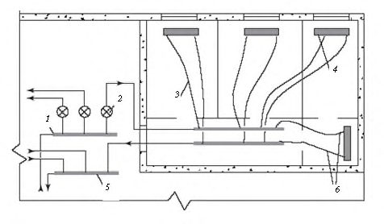
- бачок унитаза;
- биде;
- умывальник;
- магистраль в санузле;
- ванна;
9, 10
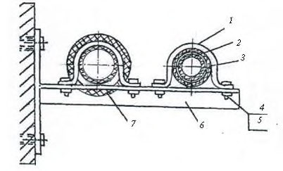
- б) Коллекторная схема с индивидуальной подачей воды
- стояки;
- патрубки от стояков;
- подводки к водоразборным точкам
(линии - водопроводы: х - холодный, г - горячий)
Рисунок 14.1 -Трассировка водопроводов
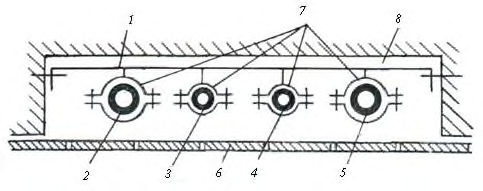
- а) Традиционная схема (параллельно строительным конструкциям) с попутной раздачей теплоносителя нагревательным приборам и отводом теплоносителя от нагревательных приборов
- коллекторы;
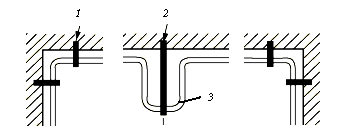
- б) Коллекторная схема с индивидуальной раздачей теплоносителя нагревательным приборам и отводом теплоносителя от нагревательных приборов
1 - распределительный коллектор; 2 - счетчик поквартирного учета расхода воды; 3 - подводка (разводка); 4 - нагревательный прибор (радиатор, конвектор и т. п.); 5 - сборный коллектор; 6 - трубы в полу (стрелками показано направление течения теплоносителя)
Рисунок 14.2 - Трассировка трубопроводов водяного отопления
14.3Прокладка трубопроводов
(разводки к отопительным приборам) допускается прокладывать как скрыто (в плинтусах/бороздах), так и открыто.
Примечание - Техническое обслуживание пресс-инструментов следует проводить не реже одного раза в год. При невыполнении этого требования данным пресс-инструментом пользоваться не допускается.
- входной контроль качества (ВКК): всех используемых при монтаже изделий сравнением с нормативной документацией на них;
- операционный контроль качества (ОКК): всех технологических процессов с составлением актов на скрытые работы;
- приемочный контроль качества (ПКК): проверку соответствия диаметров трубопроводов проекту, взаимного расположения труб разных систем (водопроводы, канализация, отопление), уклонов, расстановку и прочности креплений труб (коллекторов, сантех- и отопительных приборов и арматуры), обеспечения компенсирующей способности трубопроводов, расстояний между осями стояков, их прямолинейности и вертикальности, исправности и функционирования водоразборной арматуры.
14.4Правила оптимального крепления труб из «сшитых» полиэтиленов
- тщательную разметку места установки крепежа;
- подготовку места установки крепежа;
- ВКК всех элементов крепежа (дюбелей, шурупов, хомутов, полухомутов, прокладок, винтов, болтов, гаек и др.);
- прочную фиксацию несущих элементов крепежа (кронштейнов, подвесок и др.) к строительным конструкциям (пристрелку, закрепление с помощью шурупов или шпилек и т. п.) с проведением ОКК;
- расположение трубопровода и элементов крепежа на нем в строго проектном положении;
- 22 - сопряжение элементов крепежа и труб с прочностью, достаточной для удержания трубопровода в проектном положении в течение всего срока эксплуатации, но без создания чрезмерных контактных давлений на стенки труб из ПЭ-С, которые могут привести к их преждевременному разрушению, с проведением ОКК;
- обязательный контроль качества выполнения всех вышеперечисленных технологических процессов и окончательного монтажа крепления с выполнением ПКК.
- а) Вертикальные одиночные
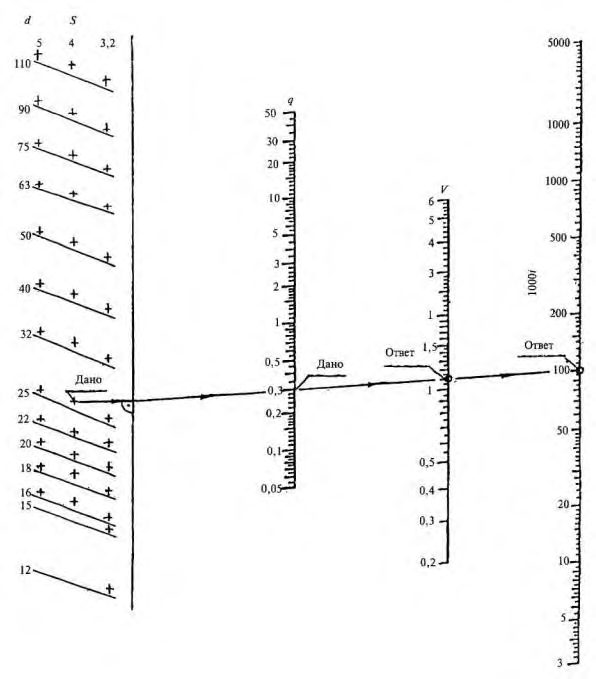
б) Вертикальные парные
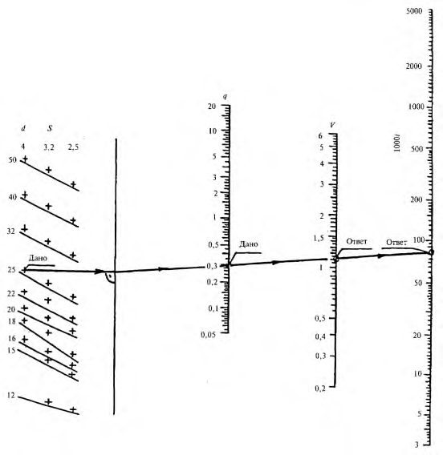
в) Горизонтальные (парные)
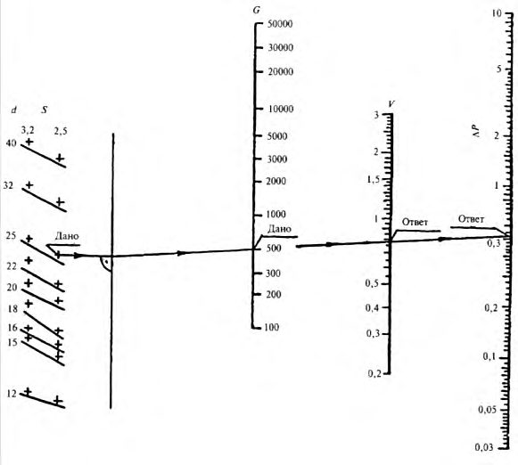
1 - хомут; 2 - трубопровод; 3 - прокладка; 4 - крепежный болт; 5 - шайба; 6 - уголок-консоль; 7 -теплоизоляция
Рисунок 14.3 - Расстановка крепежа на трубопроводах из труб из ПЭ-С
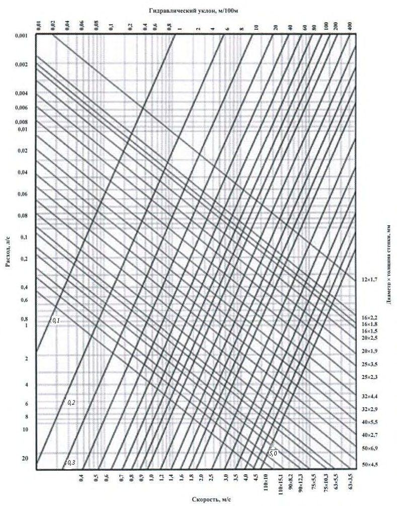
1 - стальная полоса 50 5 мм; 2 -5 - водопроводы и трубопровод канализации из полимерных труб; 6 - плитка; 7 - хомуты; 8 - штроба в стене
Рисунок 14.4 - Крепление труб из ПЭ-С в штробе
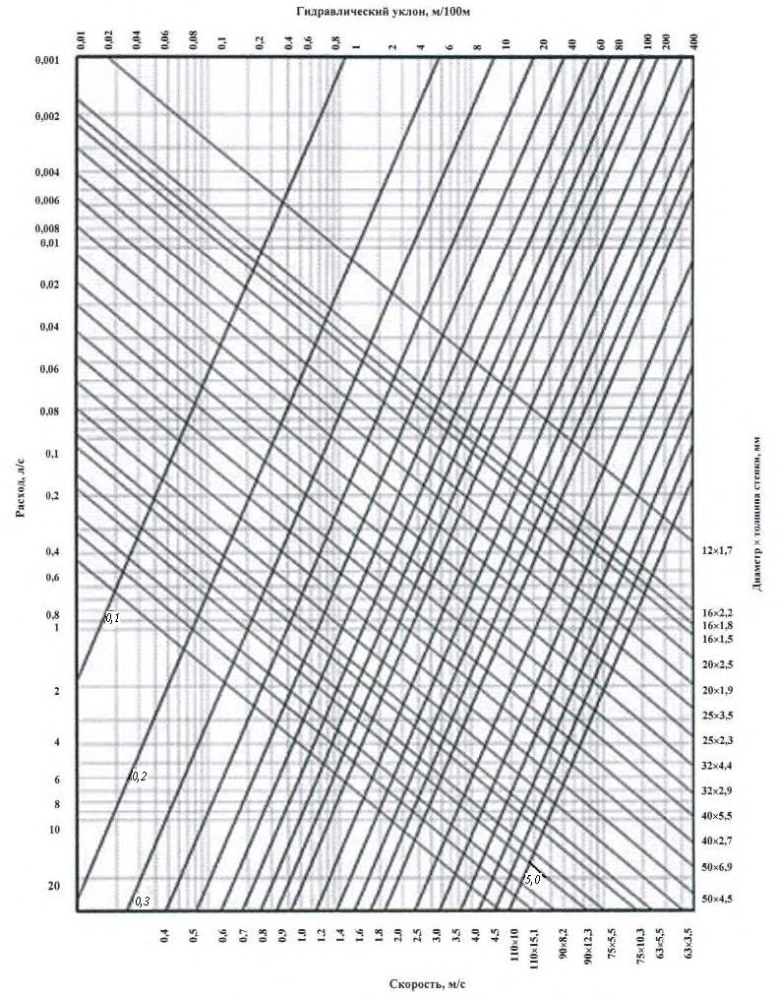
1 - неподвижная опора; 2 - подвижная опора; 3 - П-образный компенсатор
Рисунок 14.5 - Расположение неподвижных опор для компенсации температурных деформаций трубопровода из труб из ПЭ-С
- 14.4.5.1 При отсутствии проектных данных допускается использовать рекомендации для соответствующих диаметров труб из ПЭ-С (таблица 14.1) по максимальным расстояниям L макс между двумя подвижными опорами или между неподвижной и подвижной опорами.
- 14.4.5.2 При креплении трубопроводов следует учитывать характер креплений «подвижные» и «мертвые» опоры. В опорах первого типа трубы свободно перемещаются вдоль своей оси, поэтому между поверхностями труб и хомутов должен быть обеспечен зазор 1-2 мм. В опорах второго типа трубы перемещаться не должны. Между такими «мертвыми точками» участок трубопровода не может свободно удлиняться или укорачиваться в зависимости от изменения эксплуатационной температуры. В этих местах
Таблица 14.1 Максимальные расстояния L макс между двумя опорами для труб из ПЭ-С
| d n , мм | d n , мм | 16 | 20 | 25 | 32 | 40 | 50 | 63 | 75 | 90 | 110 |
|---|---|---|---|---|---|---|---|---|---|---|---|
| L макс, | холодной | 0,55 | 0,6 | 0,65 | 1 | 1,1 | 1,25 | 1,4 | 1,5 | 1,65 | 1,9 |
| L макс, | горячей | - | 0,5 | 0,6 | 0,65 | 0,8 | 1 | 1,2 | 1,3 | 1,45 | 1,6 |
трубопроводы следует закреплять неподвижно (не допускается чрезмерно стягивать оболочку труб хомутами, так как это приведет к завышенным растягивающим напряжениям в материале и трубы могут преждевременно разрушиться).
В качестве инструмента следует использовать дрели и перфораторы.
15Порядок испытаний трубопроводов из труб из «сшитых» полиэтиленов
16Промывка водопроводов из труб из «сшитых» полиэтиленов
17Порядок сдачи водопроводов из труб из «сшитых» полиэтиленов заказчику
18Техника безопасности, противопожарная безопасность, производственная санитария, эргономика и охрана окружающей среды
18.1Техника безопасности
Примечание - Пригодность инструмента, приспособлений, средств малой механизации (СММ) и т. п. следует проверять в установленном порядке с указанием сроков, установленных в техпаспортах.
Примечание - Не допускается устранять обнаруженные нарушения требований безопасности собственными силами. Работники обязаны сообщить о них бригадиру, прорабу, инженеру по технике безопасности или руководителю работ.
18.2Противопожарная безопасность
18.3Производственная санитария
Примечание - Бытовые помещения: гардеробные, умывальные, душевые, а также помещения для сушки рабочей одежды и обогрева работников должны соответствовать СанПиН 2.2.1/2.1.1.1200. Бытовые помещения должны быть размещены отдельно и, только в виде исключения, в строящихся зданиях. Количество мест для хранения спецодежды в гардеробных определяется числом работающих во всех сменах. Для просушки одежды и обуви при гардеробных помещениях надлежит устраивать особые комнаты-сушилки или специальные шкафы, оборудованные устройствами для подачи в шкафы подогретого и вытяжки влажного воздуха. Санитарно-бытовые помещения ежедневно и после каждой смены должны убираться и регулярно
СП .1325800.2017
проветриваться, не реже одного раза в месяц они должны подвергаться дезинфекции. Для обогрева рабочего персонала должны быть отведены специальные помещения. Для предотвращения ожогов все обогревательные устройства должны быть закрыты решетками. На объектах должны быть умывальные с душевыми для рабочих. Умывальные должны размещаться в отдельных помещениях, смежных с гардеробными, или в помещениях гардеробных. Уборные на объектах должны находиться в свободном доступе для рабочего персонала. Места работы и отдыха должны быть обеспечены питьевой кипяченой водой (в бачках с крышками на замке, кранами или фонтанчиками). При бачках должны быть кружки. Бачки и кружки необходимо содержать в чистоте и ежедневно промывать. Участки строительства должны быть оборудованы специальными помещениями для отдыха, принятия пищи и обогрева в зимнее время рабочих. Для обогрева рабочих следует использовать перерывы продолжительностью 10 мин при температуре от минус 20 °С до минус 30 °С и полное прекращение работ при температуре ниже минус 30 °С.
18.4Эргономика
18.5Охрана окружающей среды
АПриложение А. Номограммы
а) Системы холодного водоснабжения с трубами из ПЭ-С диаметрами от 12 до 110 мм, серий S5; S4; S3,2
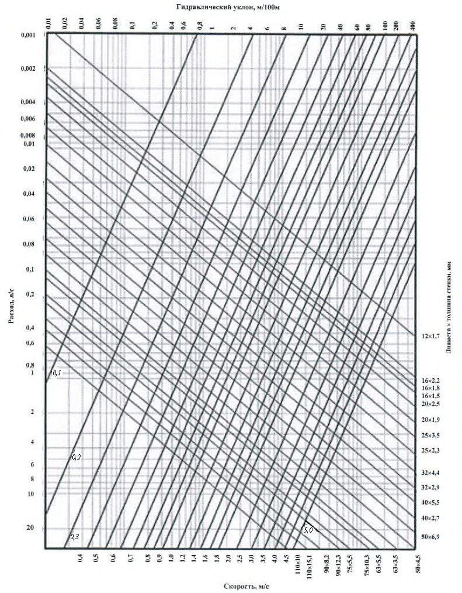
б) Системы горячего водоснабжения с трубами из ПЭ-С диаметрами от 12 до 50 мм, серий S4; S3,2; S2,5
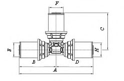
в) Системы водяного отопления со средней температурой 80 о С с трубами из ПЭ-С диаметрами от 12 до 50 мм, серий S3,2; S2,5
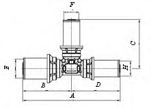
d - наружный диаметр, мм; S - серия труб; q - расчетный расход воды, л/с; V - средняя по сечению скорость движения, м/с; i - гидравлический уклон; G - расход теплоносителя, кг/ч; ∆ Р - разность давлений, кПа/м
Например, дано: диаметр трубы d= 25 мм, серия трубы S= 4, расход 0,3 л/с. Проводя через эти три точки прямую линию, пересекающие шкалы V и Р получаем ответ: Скорость 1,1 м/с и разность давлений 100 кПа/м
Рисунок А.1 -Номограммы на выровненных точках для приближенного гидравлического расчета трубопроводов систем а) Температура транспортирования воды 10 о С
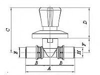
б) Температура транспортирования воды 50 о С
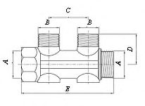
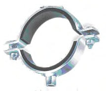
с) Температура транспортирования воды 80 о С
Рисунок А.2 - Сетчатые номограммы для приближенных гидравлических расчетов трубопроводов из труб из ПЭ-С при транспортировании воды с температурами, о C
БПриложение Б. Конструкция и размеры латунных фитингов
Таблица Б.1 Штуцерные муфты для соединения труб из ПЭ-С
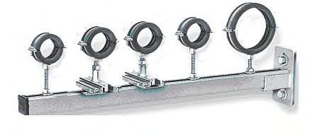
Примечание А - длина изделия, мм;
Е , F - внутренние диаметры обжимной муфты, мм;
G - резьба, дюйм.
СП .1325800.2017
Таблица Б.2 Угольники для устройства трубопроводов из труб из ПЭ-С
Таблица Б.3 Тройники для устройства трубопроводов из труб из ПЭ-С
СП .1325800.2017
Таблица Б.4 Распределительные коллекторы для устройства трубопроводов из труб из ПЭ-С
Таблица Б.5 Штуцерный клапан для установки на трубопроводах из труб из ПЭ-С
Таблица Б.6 Штуцерные фитинги из полисульфона для труб из ПЭ-С
| Наименование детали | Размер, мм |
|---|---|
| Соединитель | 16 16, 20 20, 25 25, 32 32 |
| Переходник | 20 16, 25 16, 25 20, 32 20, 32 25, 40 32 |
| Угольник | 16 16, 20 20, 25 25, 32 32, 40 40 |
| Тройник прямой равнопроходной | 16 16 16, 20 20 20, 25 25 25, 32 32 32, 40 40 40 |
| Тройник прямой переходной | 16 20 16, 20 16 16, 20 16 20, 20 20 16, 20 25 20, 25 16 16, 25 16 20, 25 16 25, 25 20 16, 25 20 20, 25 20 25, 32 20 25, 32 25 25, 32 25 32, 32 40 32, 40 32 32, 40 32 40 |
Таблица Б.7 Пресс-фитинги из модифицированного полисульфона с прессвтулкой (гильзой) из тонкой нержавеющей стали для использования на трубопроводах из труб из ПЭ-С
| Наименование | Наименование | Размер, мм |
|---|---|---|
| Пресс-муфта | штуцерная | 16 16, 20 20 |
| Пресс-муфта | с резьбой | 16 1 / 2 ˝, 20 3 / 4 ˝, 25 1˝, 26 1˝ |
| Пресс-угольник | штуцерная | 25 25, 26 26 |
| Пресс-угольник | с резьбой | 16 1 / 2 ˝ |
| Пресс-тройник | штуцерная | 16 16 16, 20 20 20 |
ВПриложение В. Виды крепежа
Та б л и ц а В.1 Винтовой крепеж с двумя полухомутами
| Номинальный диаметр трубы, мм | Размер хомута, мм | Резьба |
|---|---|---|
| 25 | 25-28 | М8 |
| 32 | 32-35 | М8 |
| 40 | 38-42 | М8 |
| 50 | 47-51 | М8 |
| 63 | 59-64 | М8 |
| 75 | 74-80 | М10 |
| 90 | 87-92 | М10 |
| 110 | 113-118 | М10 |
Таблица В.2 Крепеж -одновинтовой хомут
| Диаметр, дюйм | Размер хомута, мм |
|---|---|
| 1/2 | 20-23 |
| 3/4 | 25-30 |
| 1 | 31-38 |
| 5 | 40-46 |
| 1,5 | 48-53 |
Таблица В.3 Полимерные крепежи-зажимы
| Наименование | Общий вид | Диаметр трубы, мм |
|---|---|---|
| Одинарный | 16-25 | |
| Двойной | 2×16 2×20 2×25 | |
| С лентой | 32-110 |
Рисунок В.1 - Опоры для крепления трубопроводов из труб из ПЭ-С
Рисунок В.2 -Крепеж для трубопроводов из труб из ПЭ-С
ГПриложение Г. Коэффициенты местных сопротивлений трубных изделий
Таблица Г.1 Приблизительные значения коэффициента местных сопротивлений трубных изделий
| Наименование изделия | Наименование изделия | Наименование изделия | ζ | Схема |
|---|---|---|---|---|
| Муфта с уменьшением диаметра на | Муфта с уменьшением диаметра на | 0 | 0,25 | |
| число калибров | число калибров | 1 | 0,4 | |
| 2 | 0,5 | |||
| 3 | 0,6 | |||
| 4 | 0,7 | |||
| Расширение | Расширение | 1 | ||
| Угольник, град | Угольник, град | 90 | 1,2 | |
| 45 | 0,5 | |||
| Тройник | Тройник | разделение потока | 1,2 | |
| слияние потока | 0,8 | |||
| Крестовина | Крестовина | соединение потока | 2,1 | |
| разделение потока | 3,7 | |||
| Муфта комбинированная с резьбой | Муфта комбинированная с резьбой | внутренней | 0,5 | |
| наружной | 0,7 | |||
| Угольник комбинированный с | Угольник комбинированный с | внутренней | 1,4 | |
| резьбой | резьбой | наружной | 1,6 | |
| Тройник комбинированный с резьбой | Тройник комбинированный с резьбой | наружной | 1,4-1,8 | |
| Клапан диаметром, мм | Клапан диаметром, мм | 20 | 9,5 | |
| 25 | 8,5 | |||
| 32 | 7,6 | |||
| 40 | 5,7 | |||
| Кран шаровой полнопроходной | Кран шаровой полнопроходной | Кран шаровой полнопроходной | ||
| Гнутье из труб | отступ (уток) | отступ (уток) | 0,5 | |
| Гнутье из труб | обход (скоба) | обход (скоба) | 1 | |
| Гнутье из труб | калач | калач | 0,7 | |
| Гнутье из труб | компенсаторы | П-образный | 2,3-3 | - |
| Гнутье из труб | компенсаторы | лиро-образный | 2-2,6 | - |
| Гнутье из труб | отводы с R = m * d n | m = 5 | 0,2 | - |
| Гнутье из труб | отводы с R = m * d n | m = 4 | 0,3 | - |
| Гнутье из труб | отводы с R = m * d n | m = 3 | 0,5 | - |
| Гнутье из труб | m = 2 | 0,7 | - | |
| Гнутье из труб | m = 1 | 1 | - |
Библиография
- [1] Федеральный закон от 30 декабря 2009 г. № 384-ФЗ «Технический регламент о безопасности зданий и сооружений»
- [2] Федеральный закон от 23 ноября 2009 г. № 261-ФЗ «Об энергосбережении и о повышении энергетической эффективности и о внесении изменений в отдельные законодательные акты Российской Федерации»
- [3] Федеральный закон от 27 декабря 2002 г. № 184-ФЗ «О техническом регулировании»
- [4] Федеральный закон от 22 июля 2008 г. № 123-ФЗ «Технический регламент о требованиях пожарной безопасности»
- [5] СНиП 12-03-2001 Безопасность труда в строительстве. Часть 1. Общие требования
- [6] СНиП 12-04-2002 Безопасность труда в строительстве. Часть 2. Строительное производство